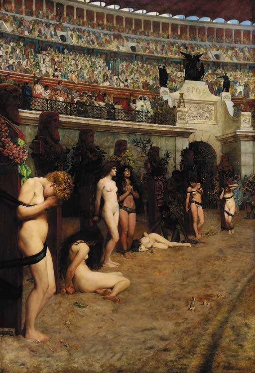

Winning the crown of martyrdom
I had an idea about a zombie plague story where there is no difference between normal people and the infected, except for the lust for brains. They would be more similar to vampires rather than the classic zombies canon, as they would act in a rational and methodical way so that they are not discovered, thus killing in a more serial killer way than a horde of zombies attacking at first sight.
Outlining my story I realized that I have two critical points in my story:
- How does it spread without transforming my zombies straight into vampire? My best idea is to have it in some sort of Coronavirus form.
- The climax of the story would come at the moment when the zombie population would surpass a critical mass. The amount of brains available for them to eat would shrink under a certain number thus making them go all out without any precaution and also collapsing society as a result.
One of the themes that I wanted to touch on with that second point was the turn in tides in the late Roman Empire when Christians went from being persecuted to being the persecutors in a short time span. The amazing thing that I found when reading the Wikipedia article about this had me completely derailed from my initial idea, because it is a much better story than any zombie book I could ever write.
The earliest Christian martyrs, tortured and killed by Roman officials enforcing worship of the gods, won so much fame among their co-religionists that others wished to imitate them to such an extent that a group presented themselves to the governor of Asia, declaring themselves to be Christians, and calling on him to do his duty and put them to death. He executed a few, but as the rest demanded it as well, he responded, exasperated, “You wretches, if you want to die, you have cliffs to leap from and ropes to hang by.” This attitude was sufficiently widespread for Church authorities to begin to distinguish sharply “between solicited martyrdom and the more traditional kind that came as a result of persecution.” [1]
There are other mentions of church authorities having to deny martyrdom to those killed after blatant provocation, attacking pagan temples being one example. How has this not been put in a big movie so far, especially with the shift in Hollywood to a more left-atheist orientation.

References
[1] Wikipedia article on the Persecution of Christians in the Roman Empire